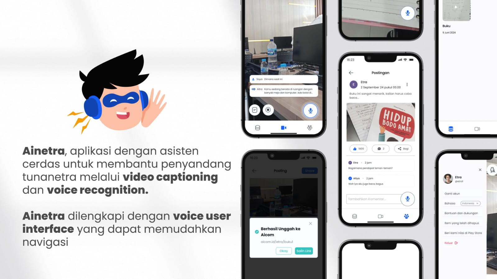

Tanggal Publikasi: 23 Oktober 2024
Ketua tim Timses Aities ITS Hilmi Fawwaz Sa’ad mengatakan, inovasi ini dapat mendukung kemandirian penyandang gangguan penglihatan dalam mengeksplorasi dan mengenali lingkungan sekitar. Sehingga, kesulitan seperti tersesat, menabrak objek, dan keterbatasan lain yang dihadapi pengguna dapat teratasi. “Pengguna akan dibantu melalui interaksi suara dengan asisten cerdas Ainetra,” ujarnya.
Dalam menjalankan perannya, Ainetra membawa sejumlah fitur yang dapat dengan mudah diakses pengguna. Di antaranya, Aitra, Aisee, Aimo, dan Aicom yang juga memanfaatkan kecerdasan buatan atau artificial intelligence (AI) dalam penggunaannya. Melalui uji coba yang telah dilakukan, mahasiswa Departemen Teknik Informatika tersebut mengungkapkan bahwa tata letak setiap fitur sudah diatur sedemikian rupa untuk mempermudah pengguna.
Hilmi menjelaskan, Aitra merupakan fitur utama dalam Ainetra berupa asisten cerdas yang dapat memberikan informasi, petunjuk arah, atau bantuan lainnya kepada pengguna. Fitur ini dapat diakses dengan mudah oleh pengguna melalui perintah berupa input suara. “Fitur yang terintegrasi dengan VUI ini memungkinkan pengguna melakukan interaksi suara dengan asisten cerdas,” papar mahasiswa kelahiran 2004 tersebut.